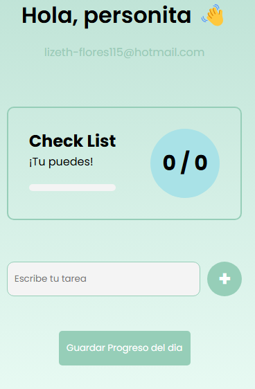
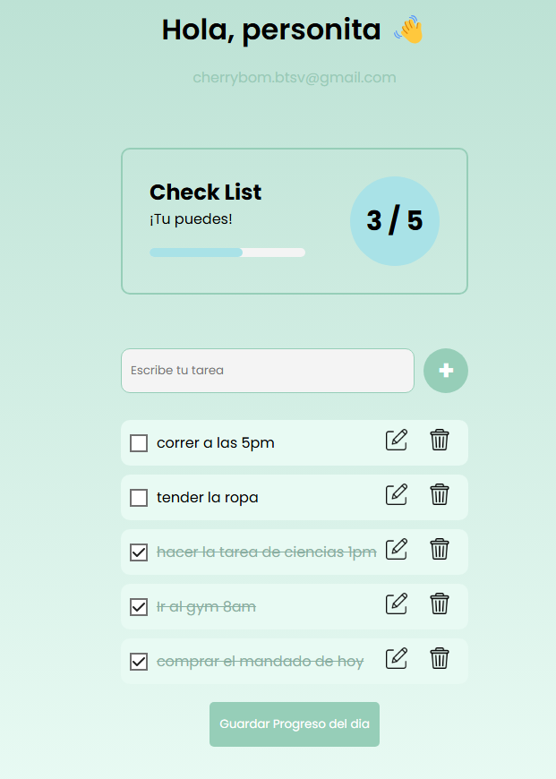
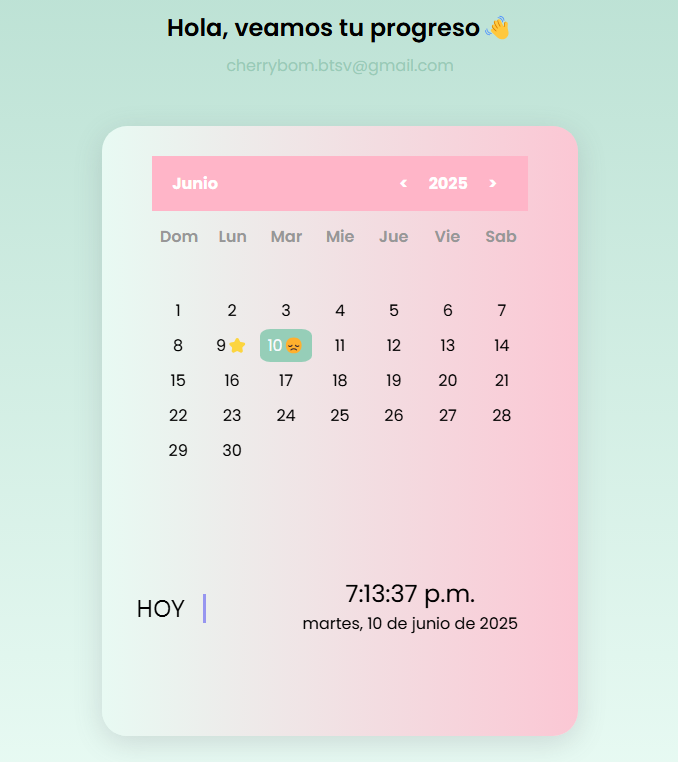

¿Como usar nuestra pagina web? Proyecto de vida
Paso 1:
Una vez que inicies sesion, apareceras en la seccion Realizar reporte

En esta sección podrás gestionar tus tareas diarias de manera fácil y eficiente:
✔ Agregar nuevas actividades que necesites completar.
✔ Editar o eliminar tareas en cualquier momento.
✔ Marcar como completadas las actividades que hayas finalizado.
✔ Ver tu progreso en tiempo real y mantener la motivación.

Paso 2:
Revisa tu progreso en el Calendario de Racha!
En esta sección podrás visualizar tu consistencia diaria de manera intuitiva:
✅ Emojis que motivan:
- ⭐ (Estrella): Días donde completaste TODAS tus tareas.
- 😞 (Cara triste): Días donde quedaron tareas pendientes.
- Solo número: Días sin registro de actividades.
✅ Funcionalidades clave:
- Navegación entre meses/años: Usa los botones < y > para cambiar de mes o año.
- Fecha actual resaltada: El día de hoy aparece en color verde para identificarlo fácilmente.
- Registro automático: Los emojis se actualizan automáticamente al guardar tu progreso en Realizar Reporte.

📌 Tip: ¡Mantén una racha de estrellas para construir hábitos sólidos!